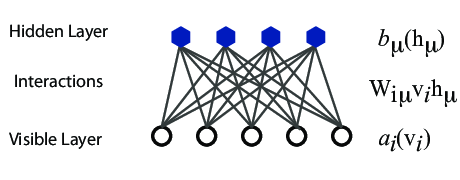

Machine learning is the science of giving computers the ability to learn without being explicitly programmed. The idea is that there exist generic algorithms which can be used to find patterns in a broad class of data sets without having to write code specifically for each problem. The algorithm will build its own logic based on the data.
Machine learning is a subfield of computer science, and is closely related to computational statistics. It evolved from the study of pattern recognition in artificial intelligence (AI) research, and has made contributions to AI tasks like computer vision, natural language processing and speech recognition. It has also, especially in later years, found applications in a wide variety of other areas, including bioinformatics, economy, physics, finance and marketing.
The approaches to machine learning are many, but are often split into two main categories. In supervised learning we know the answer to a problem, and let the computer deduce the logic behind it. On the other hand, unsupervised learning is a method for finding patterns and relationship in data sets without any prior knowledge of the system. Some authours also operate with a third category, namely reinforcement learning. This is a paradigm of learning inspired by behavioural psychology, where learning is achieved by trial-and-error, solely from rewards and punishment.
Another way to categorize machine learning tasks is to consider the desired output of a system. Some of the most common tasks are:
This behaviour has inspired a simple mathematical model for an artificial neuron.
$$
\begin{equation}
y = f\left(\sum_{i=1}^n w_ix_i\right) = f(u)
\tag{1}
\end{equation}
$$
Here, the output \( y \) of the neuron is the value of its activation function, which have as input
a weighted sum of signals \( x_i, \dots ,x_n \) received by \( n \) other neurons.
An artificial neural network (NN), is a computational model that consists of layers of connected neurons, or nodes. It is supposed to mimic a biological nervous system by letting each neuron interact with other neurons by sending signals in the form of mathematical functions between layers. A wide variety of different NNs have been developed, but most of them consist of an input layer, an output layer and eventual layers in-between, called hidden layers. All layers can contain an arbitrary number of nodes, and each connection between two nodes is associated with a weight variable.
Nodes are represented by circles, while the arrows display the connections between the nodes, including the direction of information flow. Additionally, each arrow corresponds to a weight variable, not displayed here. We observe that each node in a layer is connected to all nodes in the subsequent layer, making this a so-called fully-connected FFNN.
A different variant of FFNNs are convolutional neural networks (CNNs), which have a connectivity pattern inspired by the animal visual cortex. Individual neurons in the visual cortex only respond to stimuli from small sub-regions of the visual field, called a receptive field. This makes the neurons well-suited to exploit the strong spatially local correlation present in natural images. The response of each neuron can be approximated mathematically as a convolution operation.
CNNs emulate the behaviour of neurons in the visual cortex by enforcing a local connectivity pattern between nodes of adjacent layers: Each node in a convolutional layer is connected only to a subset of the nodes in the previous layer, in contrast to the fully-connected FFNN. Often, CNNs consist of several convolutional layers that learn local features of the input, with a fully-connected layer at the end, which gathers all the local data and produces the outputs. They have wide applications in image and video recognition
So far we have only mentioned NNs where information flows in one direction: forward. Recurrent neural networks on the other hand, have connections between nodes that form directed cycles. This creates a form of internal memory which are able to capture information on what has been calculated before; the output is dependent on the previous computations. Recurrent NNs make use of sequential information by performing the same task for every element in a sequence, where each element depends on previous elements. An example of such information is sentences, making recurrent NNs especially well-suited for handwriting and speech recognition.
There are many other kinds of NNs that have been developed. One type that is specifically designed for interpolation in multidimensional space is the radial basis function (RBF) network. RBFs are typically made up of three layers: an input layer, a hidden layer with non-linear radial symmetric activation functions and a linear output layer (''linear'' here means that each node in the output layer has a linear activation function). The layers are normally fully-connected and there are no cycles, thus RBFs can be viewed as a type of fully-connected FFNN. They are however usually treated as a separate type of NN due the unusual activation functions.
Other types of NNs could also be mentioned, but are outside the scope of this work. We will now move on to a detailed description of how a fully-connected FFNN works, and how it can be used to interpolate data sets.
One use often so-called fully-connected feed-forward neural networks with three or more layers (an input layer, one or more hidden layers and an output layer) consisting of neurons that have non-linear activation functions.
Such networks are often called multilayer perceptrons (MLPs)
According to the Universal approximation theorem, a feed-forward neural network with just a single hidden layer containing a finite number of neurons can approximate a continuous multidimensional function to arbitrary accuracy, assuming the activation function for the hidden layer is a non-constant, bounded and monotonically-increasing continuous function. Note that the requirements on the activation function only applies to the hidden layer, the output nodes are always assumed to be linear, so as to not restrict the range of output values.
We note that this theorem is only applicable to a NN with one hidden layer. Therefore, we can easily construct an NN that employs activation functions which do not satisfy the above requirements, as long as we have at least one layer with activation functions that do. Furthermore, although the universal approximation theorem lays the theoretical foundation for regression with neural networks, it does not say anything about how things work in practice: A neural network can still be able to approximate a given function reasonably well without having the flexibility to fit all other functions.
$$
\begin{equation}
y = f\left(\sum_{i=1}^n w_ix_i + b_i\right) = f(u)
\tag{2}
\end{equation}
$$
In an FFNN of such neurons, the inputs \( x_i \)
are the outputs of the neurons in the preceding layer. Furthermore, an MLP is fully-connected,
which means that each neuron receives a weighted sum of the outputs of all neurons in the previous layer.
First, for each node \( i \) in the first hidden layer, we calculate a weighted sum \( u_i^1 \) of the input coordinates \( x_j \),
$$
\begin{equation}
u_i^1 = \sum_{j=1}^2 w_{ij}^1 x_j + b_i^1
\tag{3}
\end{equation}
$$
This value is the argument to the activation function \( f_1 \) of each neuron \( i \),
producing the output \( y_i^1 \) of all neurons in layer 1,
$$
\begin{equation}
y_i^1 = f_1(u_i^1) = f_1\left(\sum_{j=1}^2 w_{ij}^1 x_j + b_i^1\right)
\tag{4}
\end{equation}
$$
where we assume that all nodes in the same layer have identical activation functions, hence the notation \( f_l \)
$$
\begin{equation}
y_i^l = f_l(u_i^l) = f_l\left(\sum_{j=1}^{N_{l-1}} w_{ij}^l y_j^{l-1} + b_i^l\right)
\tag{5}
\end{equation}
$$
where \( N_l \) is the number of nodes in layer \( l \). When the output of all the nodes in the first hidden layer are computed,
the values of the subsequent layer can be calculated and so forth until the output is obtained.
The output of neuron \( i \) in layer 2 is thus,
$$
\begin{align}
y_i^2 &= f_2\left(\sum_{j=1}^3 w_{ij}^2 y_j^1 + b_i^2\right)
\tag{6}\\
&= f_2\left[\sum_{j=1}^3 w_{ij}^2f_1\left(\sum_{k=1}^2 w_{jk}^1 x_k + b_j^1\right) + b_i^2\right]
\tag{7}
\end{align}
$$
where we have substituted \( y_m^1 \) with. Finally, the NN output yields,
$$
\begin{align}
y_1^3 &= f_3\left(\sum_{j=1}^3 w_{1m}^3 y_j^2 + b_1^3\right)
\tag{8}\\
&= f_3\left[\sum_{j=1}^3 w_{1j}^3 f_2\left(\sum_{k=1}^3 w_{jk}^2 f_1\left(\sum_{m=1}^2 w_{km}^1 x_m + b_k^1\right) + b_j^2\right)
+ b_1^3\right]
\tag{9}
\end{align}
$$
We can generalize this expression to an MLP with \( l \) hidden layers. The complete functional form is,
$$
\begin{align}
&y^{l+1}_1\! = \!f_{l+1}\!\left[\!\sum_{j=1}^{N_l}\! w_{1j}^3 f_l\!\left(\!\sum_{k=1}^{N_{l-1}}\! w_{jk}^2 f_{l-1}\!\left(\!
\dots \!f_1\!\left(\!\sum_{n=1}^{N_0} \!w_{mn}^1 x_n\! + \!b_m^1\!\right)
\!\dots \!\right) \!+ \!b_k^2\!\right)
\!+ \!b_1^3\!\right] &&
\tag{10}
\end{align}
$$
which illustrates a basic property of MLPs: The only independent variables are the input values \( x_n \).
This confirms that an MLP, despite its quite convoluted mathematical form, is nothing more than an analytic function, specifically a mapping of real-valued vectors \( \vec{x} \in \mathbb{R}^n \rightarrow \vec{y} \in \mathbb{R}^m \). In our example, \( n=2 \) and \( m=1 \). Consequentially, the number of input and output values of the function we want to fit must be equal to the number of inputs and outputs of our MLP.
Furthermore, the flexibility and universality of a MLP can be illustrated by realizing that the expression is essentially a nested sum of scaled activation functions of the form
$$
\begin{equation}
h(x) = c_1 f(c_2 x + c_3) + c_4
\tag{11}
\end{equation}
$$
where the parameters \( c_i \) are weights and biases. By adjusting these parameters, the activation functions
can be shifted up and down or left and right, change slope or be rescaled
which is the key to the flexibility of a neural network.
Additionally, we can represent the biases and activations as layer-wise column vectors \( \vec{b}_l \) and \( \vec{y}_l \), so that the \( i \)-th element of each vector is the bias \( b_i^l \) and activation \( y_i^l \) of node \( i \) in layer \( l \) respectively.
We have that \( \mathrm{W}_l \) is a \( N_{l-1} \times N_l \) matrix, while \( \vec{b}_l \) and \( \vec{y}_l \) are \( N_l \times 1 \) column vectors. With this notation, the sum in becomes a matrix-vector multiplication, and we can write the equation for the activations of hidden layer 2 in
$$
\begin{equation}
\vec{y}_2 = f_2(\mathrm{W}_2 \vec{y}_{1} + \vec{b}_{2}) =
f_2\left(\left[\begin{array}{ccc}
w^2_{11} &w^2_{12} &w^2_{13} \\
w^2_{21} &w^2_{22} &w^2_{23} \\
w^2_{31} &w^2_{32} &w^2_{33} \\
\end{array} \right] \cdot
\left[\begin{array}{c}
y^1_1 \\
y^1_2 \\
y^1_3 \\
\end{array}\right] +
\left[\begin{array}{c}
b^2_1 \\
b^2_2 \\
b^2_3 \\
\end{array}\right]\right).
\tag{12}
\end{equation}
$$
$$
\begin{equation}
y^2_i = f_2\Bigr(w^2_{i1}y^1_1 + w^2_{i2}y^1_2 + w^2_{i3}y^1_3 + b^2_i\Bigr) =
f_2\left(\sum_{j=1}^3 w^2_{ij} y_j^1 + b^2_i\right).
\tag{13}
\end{equation}
$$
This is not just a convenient and compact notation, but also
a useful and intuitive way to think about MLPs: The output is calculated by a series of matrix-vector multiplications
and vector additions that are used as input to the activation functions. For each operation
\( \mathrm{W}_l \vec{y}_{l-1} \) we move forward one layer.
A property that characterizes a neural network, other than its connectivity, is the choice of activation function(s). As described in, the following restrictions are imposed on an activation function for a FFNN to fulfill the universal approximation theorem
The second requirement excludes all linear functions. Furthermore, in a MLP with only linear activation functions, each layer simply performs a linear transformation of its inputs.
Regardless of the number of layers, the output of the NN will be nothing but a linear function of the inputs. Thus we need to introduce some kind of non-linearity to the NN to be able to fit non-linear functions Typical examples are the logistic Sigmoid
$$
\begin{equation}
f(x) = \frac{1}{1 + e^{-x}},
\tag{14}
\end{equation}
$$
and the hyperbolic tangent function
$$
\begin{equation}
f(x) = \tanh(x)
\tag{15}
\end{equation}
$$
Why use a generative ("dreaming") model rather than the more well known discirminative deep neural networks (DNN)?
History: The RBM was developed by amongst others Geoffrey Hinton, called by some the "Godfather of Deep Learning", working with the University of Toronto and Google.

The network layers:
The goal of the hidden layer is to increase the model's expressive power. We encode complex interactions between visible variables by introducing additional, hidden variables that interact with visible degrees of freedom in a simple manner, yet still reproduce the complex correlations between visible degrees in the data once marginalized over (integrated out).
Examples of this trick being employed in physics:
The network parameters, to be optimized/learned:
$$
\begin{align}
P_{rbm}(\mathbf{x},\mathbf{h}) = \frac{1}{Z} e^{-\frac{1}{T_0}E(\mathbf{x},\mathbf{h})},
\tag{16}
\end{align}
$$
where \( Z \) is the normalization constant or partition function, defined as
$$
\begin{align}
Z = \int \int e^{-\frac{1}{T_0}E(\mathbf{x},\mathbf{h})} d\mathbf{x} d\mathbf{h}.
\tag{17}
\end{align}
$$
It is common to ignore \( T_0 \) by setting it to one.
The function \( E(\mathbf{x},\mathbf{h}) \) gives the energy of a configuration (pair of vectors) \( (\mathbf{x}, \mathbf{h}) \). The lower the energy of a configuration, the higher the probability of it. This function also depends on the parameters \( \mathbf{a} \), \( \mathbf{b} \) and \( W \). Thus, when we adjust them during the learning procedure, we are adjusting the energy function to best fit our problem.
RBMs were first developed using binary units in both the visible and hidden layer. The corresponding energy function is defined as follows:
$$
\begin{align}
E(\mathbf{x}, \mathbf{h}) = - \sum_i^M x_i a_i- \sum_j^N b_j h_j - \sum_{i,j}^{M,N} x_i w_{ij} h_j,
\tag{18}
\end{align}
$$
where the binary values taken on by the nodes are most commonly 0 and 1.
Another varient is the RBM where the visible units are Gaussian while the hidden units remain binary:
$$
\begin{align}
E(\mathbf{x}, \mathbf{h}) = \sum_i^M \frac{(x_i - a_i)^2}{2\sigma_i^2} - \sum_j^N b_j h_j - \sum_{i,j}^{M,N} \frac{x_i w_{ij} h_j}{\sigma_i^2}.
\tag{19}
\end{align}
$$
Other types of units include:
Metropolis sampling starts by suggesting a new configuration \( \boldsymbol{x}^{k+1} \). In the brute force method this is done by some random change of the visible units. The new configuration is then accepted with the acceptance probability
$$
\begin{align}
A(\boldsymbol{x}^k \rightarrow \boldsymbol{x}^{k+1}) = \text{min} (1, \frac{P(\boldsymbol{x}^{k+1})}{P(\boldsymbol{x}^k)}),
\tag{20}
\end{align}
$$
where we need the marginalized probability
$$
\begin{align}
P(\boldsymbol{x}) &= \sum_\mathbf{h} P_{rbm}(\mathbf{x}, \mathbf{h})
\tag{21}\\
&= \frac{1}{Z}\sum_\mathbf{h} e^{-E(\mathbf{x}, \mathbf{h})}.
\tag{22}
\end{align}
$$
In this method we sample from the joint probability \( P_{rbm} (\mathbf{x}, \mathbf{h}) \) by way of a two step sampling process. We alternately update the visible and hidden units. New samples are generated according to the conditional probabilities \( P(x_i|\mathbf{h}) \) and \( P(h_j|\mathbf{x}) \) respectively and accepted with the probability of \( 1 \). While the the visible nodes are dependent on the hidden nodes and vice versa, the nodes are independent of other nodes within the same layer. This is due to there being no intra layer interactions in the restricted Boltzmann machine.
The conditional probabilities are often referred to as the activitation functions in the neural networks context due to their role in determining the node outputs. For the binary-binary RBM they are
$$
\begin{align}
P(h_j = 1 | \boldsymbol{x}) &= \frac{1}{1 + e^{-b_j - \sum_i x_i w_{ij}}}
\tag{23}\\
P(x_i = 1 | \boldsymbol{h}) &= \frac{1}{1 + e^{-a_j - \sum_j h_j w_{ij}}},
\tag{24}
\end{align}
$$
where we recognize the logistic sigmoid function \( \sigma (x) = 1/(1+exp(-x)) \).
$$
\begin{align}
P(x_i|\mathbf{h}) &= \mathcal{N}(x_i; a_i+ \sum_j h_j w_{ij}, \sigma^2)
\tag{25}\\
P(h_j=1|\mathbf{x}) &= \frac{1}{1+e^{-b_j-\frac{1}{\sigma^2} \sum_i x_i w_{ij}}},
\tag{26}
\end{align}
$$
while the visible units now follow a normal distribution, we see the hidden units again follow the logistic sigmoid function.
$$
\begin{align}
\mathcal{L}(\{ \theta_i \}) &= \langle \text{log} P_\theta(\boldsymbol{x}) \rangle_{data}
\tag{27}\\
&= - \langle E(\boldsymbol{x}; \{ \theta_i\}) \rangle_{data} - \text{log} Z(\{ \theta_i\}),
\tag{28}
\end{align}
$$
where we used that the normalization constant does not depend on the data, \( \langle \text{log} Z(\{ \theta_i\}) \rangle = \text{log} Z(\{ \theta_i\}) \)
Our cost function is the negative log-likelihood, \( \mathcal{C}(\{ \theta_i \}) = - \mathcal{L}(\{ \theta_i \}) \)
$$
\begin{align}
\boldsymbol{\theta}_{k+1} = \boldsymbol{\theta}_k - \eta \nabla \mathcal{C} (\boldsymbol{\theta}_k)
\tag{29}
\end{align}
$$
at each \( k \)-th iteration. There are a range of variants of the algorithm which aim at making the learning rate \( \eta \) more adaptive so the method might be more efficient while remaining stable.
We now need the gradient of the cost function in order to minimize it. We find that
$$
\begin{align}
\frac{\partial \mathcal{C}(\{ \theta_i\})}{\partial \theta_i}
&= \langle \frac{\partial E(\boldsymbol{x}; \theta_i)}{\partial \theta_i} \rangle_{data}
+ \frac{\partial \text{log} Z(\{ \theta_i\})}{\partial \theta_i}
\tag{30}\\
&= \langle O_i(\boldsymbol{x}) \rangle_{data} - \langle O_i(\boldsymbol{x}) \rangle_{model},
\tag{31}
\end{align}
$$
where in order to simplify notation we defined the "operator"
$$
\begin{align}
O_i(\boldsymbol{x}) = \frac{\partial E(\boldsymbol{x}; \theta_i)}{\partial \theta_i},
\tag{32}
\end{align}
$$
and used the statistical mechanics relationship between expectation values and the log-partition function:
$$
\begin{align}
\langle O_i(\boldsymbol{x}) \rangle_{model} = \text{Tr} P_\theta(\boldsymbol{x})O_i(\boldsymbol{x}) = - \frac{\partial \text{log} Z(\{ \theta_i\})}{\partial \theta_i}.
\tag{33}
\end{align}
$$
The gradient of the negative log-likelihood cost function of a Binary-Binary RBM is then
$$
\begin{align}
\frac{\partial \mathcal{C} (w_{ij}, a_i, b_j)}{\partial w_{ij}} =& \langle x_i h_j \rangle_{data} - \langle x_i h_j \rangle_{model}
\tag{34}\\
\frac{\partial \mathcal{C} (w_{ij}, a_i, b_j)}{\partial a_{ij}} =& \langle x_i \rangle_{data} - \langle x_i \rangle_{model}
\tag{35}\\
\frac{\partial \mathcal{C} (w_{ij}, a_i, b_j)}{\partial b_{ij}} =& \langle h_i \rangle_{data} - \langle h_i \rangle_{model}.
\tag{36}\\
\tag{37}
\end{align}
$$
To get the expecation values with respect to the \textit{data}, we set the visible units to each of the observed samples in the training data, then update the hidden units according to the conditional probability found before. We then average over all samples in the training data to calculate expectation values with respect to the data.
Some of their motivation included
Carleo and Troyer applied the RBM to the quantum mechanical spin lattice systems of the Ising model and Heisenberg model, with encouraging results. Our goal is to test the method on systems of moving particles. For the spin lattice systems it was natural to use a binary-binary RBM, with the nodes taking values of 1 and -1. For moving particles, on the other hand, we want the visible nodes to be continuous, representing position coordinates. Thus, we start by choosing a Gaussian-binary RBM, where the visible nodes are continuous and hidden nodes take on values of 0 or 1. If eventually we would like the hidden nodes to be continuous as well the rectified linear units seem like the most relevant choice.
$$
\begin{align}
F_{rbm}(\mathbf{x},\mathbf{h}) = \frac{1}{Z} e^{-\frac{1}{T_0}E(\mathbf{x},\mathbf{h})}.
\tag{38}
\end{align}
$$
To find the marginal distribution of \( \boldsymbol{x} \) we set:
$$
\begin{align}
F_{rbm}(\mathbf{x}) &= \sum_\mathbf{h} F_{rbm}(\mathbf{x}, \mathbf{h})
\tag{39}\\
&= \frac{1}{Z}\sum_\mathbf{h} e^{-E(\mathbf{x}, \mathbf{h})}.
\tag{40}
\end{align}
$$
Now this is what we use to represent the wave function, calling it a neural-network quantum state (NQS)
$$
\begin{align}
\Psi (\mathbf{X}) &= F_{rbm}(\mathbf{x})
\tag{41}\\
&= \frac{1}{Z}\sum_{\boldsymbol{h}} e^{-E(\mathbf{x}, \mathbf{h})}
\tag{42}\\
&= \frac{1}{Z} \sum_{\{h_j\}} e^{-\sum_i^M \frac{(x_i - a_i)^2}{2\sigma^2} + \sum_j^N b_j h_j + \sum_{i,j}^{M,N} \frac{x_i w_{ij} h_j}{\sigma^2}}
\tag{43}\\
&= \frac{1}{Z} e^{-\sum_i^M \frac{(x_i - a_i)^2}{2\sigma^2}} \prod_j^N (1 + e^{b_j + \sum_i^M \frac{x_i w_{ij}}{\sigma^2}}).
\tag{44}\\
\tag{45}
\end{align}
$$
$$
\begin{align}
G_i = \frac{\partial \langle E_L \rangle}{\partial \theta_i}
= 2(\langle E_L \frac{1}{\Psi}\frac{\partial \Psi}{\partial \theta_i} \rangle - \langle E_L \rangle \langle \frac{1}{\Psi}\frac{\partial \Psi}{\partial \theta_i} \rangle ),
\tag{46}
\end{align}
$$
where the local energy is given by
$$
\begin{align}
E_L = \frac{1}{\Psi} \hat{\mathbf{H}} \Psi.
\tag{47}
\end{align}
$$
$$
\begin{align}
\hat{\mathbf{H}} = \sum_p^P (-\frac{1}{2}\nabla_p^2 + \frac{1}{2}\omega^2 r_p^2 ) + \sum_{p < q} \frac{1}{r_{pq}}.
\tag{48}
\end{align}
$$